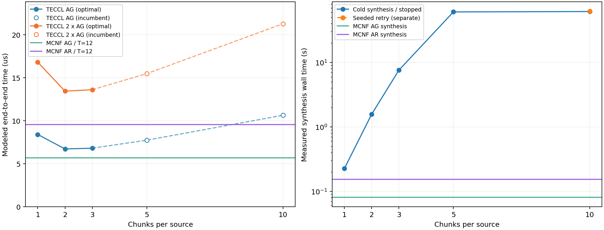

同一份每卡完整向量 0.25 MB，六卡 AllGather 每来源初始 0.25/6 MB，再拆为 c 块；每条有向边 400 Gbps=50 GB/s，每实际活跃步加 0.1 μs。AllReduce 按完整 AllGather 的二倍估算。
本组已验证调度中，2 块的 TECCL 端到端估算最短：AG=6.7167 μs，AR=13.4333 μs。MCNF T=12 主调度 AG=5.6792 μs、AR=9.5333 μs；后者比该 TECCL AR 估算少 29.03%。5/10 块尚未证明最优；这些是模型调度评估，没有硬件实测。

| 每来源块数 | 块大小(bytes) | 活跃步 | AG(μs) | AR=2AG(μs) | 冷启动合成/中止(s) | 重试合成(s) | 调度状态 |
|---|---|---|---|---|---|---|---|
| 1 | 41666.67 | 9 | 8.4000 | 16.8000 | 0.226 | — | OPTIMAL |
| 2 | 20833.33 | 13 | 6.7167 | 13.4333 | 1.571 | — | OPTIMAL |
| 3 | 13888.89 | 18 | 6.8000 | 13.6000 | 7.584 | — | OPTIMAL |
| 5 | 8333.33 | 29 | 7.7333 | 15.4667 | 60.697 | — | TIME_LIMIT / 可行上界 |
| 10 | 4166.67 | 58 | 10.6333 | 21.2667 | 61.535 | 62.488 | TIME_LIMIT / 可行上界 |
1/2/3 块的原生模型已证明最优；5 块冷启动在 60 秒限制内得到可行解，未证明最优。10 块冷启动 60 秒没有 incumbent，用已验证的 5 块调度拼接后另优化 60 秒，状态与原始 MIP gap 保留在 JSON。重试合成不包含种子构造 0.111 秒，也不包含先求得 5 块调度的成本。合成耗时含建模、求解和成功时的导出，排除导入和独立回放；中止行保留实际耗时。求解使用等带宽归一化整数模型，再按固定 0.25 MB / 400 Gbps / 0.1 μs 口径评估保存调度。
| Collective | 活跃步 | 带宽项(μs) | 启动项(μs) | 总时间(μs) | 合成(s) |
|---|---|---|---|---|---|
| allgather | 12 | 4.4792 | 1.2000 | 5.6792 | 0.081 |
| allreduce | 12 | 8.3333 | 1.2000 | 9.5333 | 0.154 |
坏卡 GPU5 由第三个物理 host 的 GPU6 替换，活动编号压紧为 0..5。物理组为 3+2+1，逻辑组仍为 3+3；六卡、三个 LRS、一个 HRS，18 条有向边，备用节点上行不降速。两边经节点映射后逐边等价。TECCL 的 alpha 是按 epoch 取整的链路传播延迟，与每活跃步启动费不同；本次不把 0.1 μs 塞入该字段。逐步重新标定时间而不改变路由和并发：每步传输 5/(6c) μs，再加 0.1 μs；所有保存调度均无空 epoch。对固定 c，这只是每 epoch 乘同一个正数，最少完成 epoch 的目标不变。MCNF 是连续分片、可变步长、逻辑 GPU 路由；TECCL 在物理链路逐跳存储转发。这里只比较各自模型的固定调度评估，未针对启动费重新优化 MCNF，也没有硬件实测。
Apple M4 / 24 GiB / conda math / Gurobi 13.0.0 / 四线程 / Seed 42。每项一次运行，时延与算法计算耗时分开报告。所有可行 TECCL 调度均通过容量、因果、无复制、需求完整性回放；MCNF 保存的 z 重新载入并通过 1e-7 原空间验收。